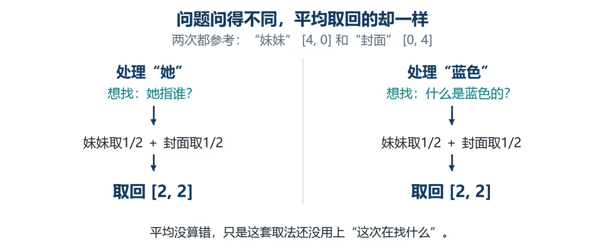
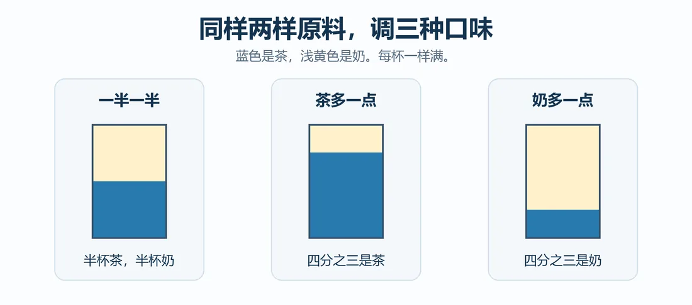
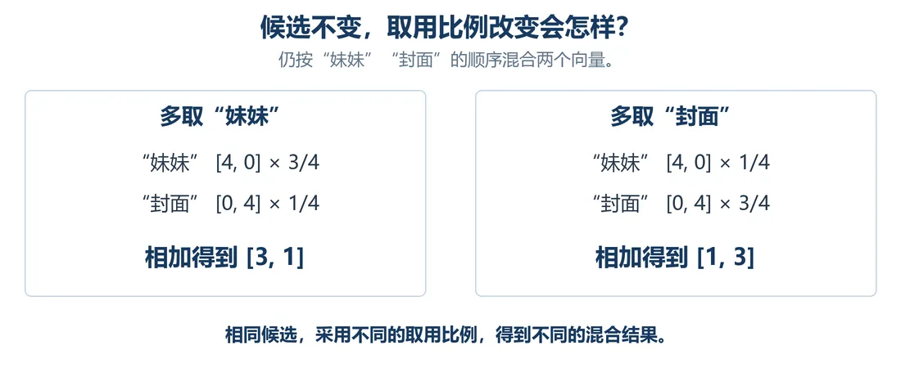

我们在这儿
前面几篇我们把长句切成 31 个 Token，排成矩阵 X。每行向量加好了位置编码，也把前面两个 Token 的信息收进来，“讲”换“读”时“故事”会变。
可这里碰到麻烦：句子后半段的“她”，真正要找的“妹妹”不在它前面紧邻的两个 Token 里。
这一篇要解决打通远距离查找思路，并看清权重不同会取回不同结果。
大概阅读约 9–12 分钟
看“妹妹｜，｜因为｜她”：从“她”往前数，第一是“因为”，第二是逗号，目标“妹妹”落在第三，读三个刚好够到。
可线索再远一点呢？把“下周”挪到“她”前面，变成“妹妹｜，｜因为｜下周｜她”，“妹妹”跑到第四了。
线索每挪一步，我们就得不断扩大往前的窗口。这个办法很被动。
排队隔太远没法直接喊话，就托中间的人一层层递过去。“她”往前两步读到“因为”，而“因为”往前两步刚好读到“妹妹”，“因为”就是传话的人。
得等第一轮算完，“她”才能用上“因为”的新向量。
短板也明显：
这里得强调一条和人的习惯相悖的认知：电脑只认得数字。位置、先后、谁和谁更近、谁更重要，所有这些都得变成数字放进向量，靠计算传递。人靠文字理解意思，机器全程只有数字和运算。
我们有现成的矩阵 X，“妹妹”的向量就在第 20 行，电脑完全可以直接调取这一行，不用中间人。
先试最简单的方案：全部一视同仁，把 31 行向量做平均。结果“她”也好、“蓝色”也好，拿到的都是同一个平均向量。
这就出问题了：读“她”想找指代的人，读“蓝色”想找被修饰的物品，两个需求完全不一样，返回的信息却一样。
就像去奶茶店，不管点什么，拿回来的都是一模一样的标准款。
那同样一批素材，能不能调整配比，调出不一样的结果？

回头看第 4 篇那个“各参考一半”，其实就是两份占一样的比例。现在把比例调成不一样的，看看能差出多少。
做个简化小实验，只留两个 Token：
数据源不变，只要改两边占比，拿到的向量就完全不同。

奶茶图先讲口味。下面换成数字，看比例怎么改变最后四格。

可配比写死，还是治标不治本。固定配方意味着“她”和“蓝色”依旧套同一套权重。
我们想要更灵活的效果：
电脑手上有当前位置的向量，还有整张矩阵 X。能不能用正在处理的这一行，跟 X 里每一行比一比，算出这一次每一行该分多大权重？
这一篇收个尾
这一篇拿到：直接访问全句的思路，以及不同权重会产生不同结果。
下一篇接着看：让电脑自己算匹配分。